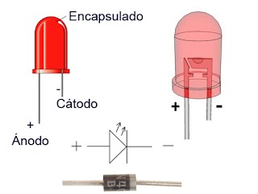
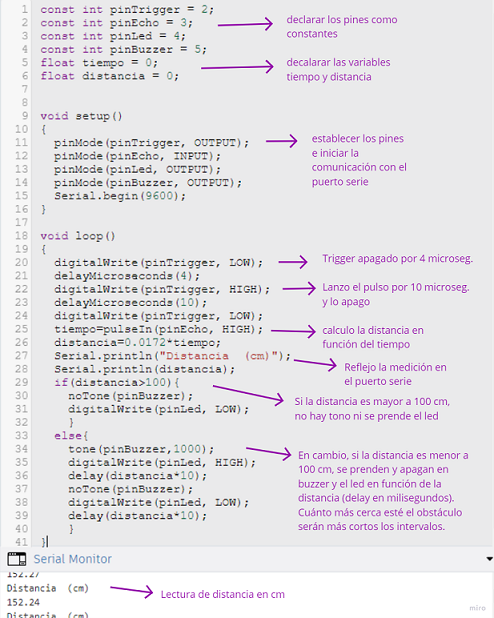

MT04
MT04 Introducción a electrónica y programación¶
El objetivo de este módulo es introducirnos en los principios de programación y electrónica aplicada en microcontroladores, utilizando la plataforma de desarrollo Arduino IDE.

Conceptos Generales¶
Arduino: es una plataforma para informática física de código abierto basada en hardware (placa electrónica) y software (Arduino IDE), fácil de usar.
La placa Arduino se basa en una placa electrónica de hardware libre que incorpora un microcontrolador re-programable y una serie de pines hembra. Estos permiten establecer conexiones entre el microcontrolador y los diferentes sensores y actuadores de una manera muy sencilla, principalmente con cables dupont.
Mediante estas conexiones la placa Arduino puede leer entradas (luz en un sensor, un dedo en un botón o un mensaje de Twitter) y convertirlo en una salida, activando un motor, encendiendo un LED, o publicando algo en línea.
Para realizar estas acciones se le debe enviar un conjunto de instrucciones (programa) al microcontrolador en la placa. Para hacerlo, se utiliza el lenguaje de programación Arduino (basado en Wiring) y el Software Arduino (IDE), basado en Processing.
Más sobre Arduino:
Interaction Design o Diseño de Interacción: es el diseño de cualquier experiencia interactiva. Se ocupa de la creación de experiencias significativas entre nosotros (los seres humanos) y los objetos. Fomenta el diseño a través de un proceso iterativo basado en prototipos de fidelidad cada vez mayor. Este enfoque, que también forma parte de algunos tipos de diseño convencional, se puede ampliar para incluir la creación de prototipos con tecnología; en particular, la creación de prototipos con electrónica. El campo específico del Diseño de Interacción involucrado con Arduino es la informática física (o Diseño de Interacción Física).
Informática física: (en inglés physical computing) consiste en construir sistemas físicos interactivos empleando software y hardware que puede captar información y responder al mundo analógico.
Tinkercad Circuits: esta plataforma online nos permite diseñar y simular circuitos electrónicos de manera virtual. Para comenzar a utilizar Tinkercad debes registrarte con una cuenta de correo electrónico. Incluye una variedad de componentes electrónicos que se pueden arrastrar y soltar en un espacio de trabajo virtual. Tinkercad Circuits también permite la integración de microcontroladores como el Arduino, permitiendo a los usuarios escribir y simular código en un entorno seguro y controlado.
Entradas y Salidas en Arduino¶
Arduino dispone de una serie de entradas (inputs) y salidas (outputs) digitales y analógicas programables que es la base de manejo de Arduino. En todas las placas los pines son multifunción o multipropósito, es decir en función de la configuración tienen una funcionalidad u otra.
Input (Entrada): Los pines configurados como entrada se utilizan para recibir información del mundo exterior hacia la placa Arduino. Estos pines leen señales eléctricas que provienen de diversos sensores o dispositivos, y luego el microcontrolador las procesa.
Output (Salida): Los pines configurados como salida se utilizan para enviar señales eléctricas desde la placa Arduino hacia otros dispositivos o componentes del proyecto. Esto permite que el Arduino controle el comportamiento de actuadores y otros elementos.
En Arduino UNO la disposición de los pines de entrada y salida son:

Cómo funcionan los pins digitales y cómo se configuran
Cómo funcionan los pins analógicos
Relación entre Arduino, entradas/salidas y sensores/actuadores:
Sensores¶
Un sensor es todo aquello que tiene una propiedad sensible a una magnitud del medio, y al variar esta magnitud también varía con cierta intensidad la propiedad, es decir, manifiesta la presencia de dicha magnitud, y también su medida. Los sensores son el primer eslabón de la cadena de IoT (Internet of Things o Internet de las cosas).
Los sensores se pueden clasificar en función de los datos de salida en:
- Digitales
- Analógicos
Dependiendo del tipo de sensor, deberemos conectarlo a una entrada digital o analógica.
Actuadores¶
Un actuador es un dispositivo capaz de transformar energía hidráulica, neumática o eléctrica en la activación de un proceso con la finalidad de generar un efecto sobre un elemento externo. Este recibe la orden de un regulador, controlador o en nuestro caso, un Arduino; y en función a ella genera la orden para activar un elemento final de control como, por ejemplo, una válvula.
Existen varios tipos de actuadores, como son:
- Electrónicos
- Hidráulicos
- Neumáticos
- Eléctricos
- Motores
- Bombas
Actuadores y periféricos Arduino
Software Arduino IDE¶
El entorno de desarrollo integrado Arduino, o software Arduino (IDE) , contiene un editor de texto para escribir código, un área de mensajes, una consola de texto, una barra de herramientas con botones para funciones comunes y una serie de menús. Se conecta al hardware Arduino (placa electrónica) para cargar programas y comunicarse con ellos.
Los programas escritos con el software Arduino (IDE) se denominan bocetos (Sketches). Estos bocetos se escriben en el editor de texto y se guardan con la extensión de archivo .ino.
Librerías o bibliotecas: son trozos de código hechas por terceros que usamos en nuestro sketch. Esto nos facilita mucho la programación y permite la abstracción haciendo que nuestro programa sea más sencillo de hacer y de entender. En este apartado también veremos cómo escribir o modificar librerías.
Conceptos básicos de electricidad¶
En un átomo, el núcleo mantiene unidos a los protones y neutrones, mientras que los electrones orbitan alrededor de ellos:

Voltaje: Cuando forzamos a los electrones a agruparse en un área determinada, dejando otra área sin electrones, creamos una diferencia de voltaje. Este voltaje es la relación entre la energía que aplicamos y la carga eléctrica:
E = V x carga
Cuando dos objetos tienen una diferencia de voltaje, podemos decir que sus electrones intentarán saltar entre sí creando un flujo de corriente, para equilibrar la situación y estabilizarse. El voltaje se expresa en voltios (V). Este voltaje puede ser constante en el tiempo o alterno.
Unidades: La energía se mide en Jules (J), el voltaje en Voltios (V) y la Carga en Coulombs (C).
Corriente: Cuando dos objetos están sujetos a una diferencia de voltaje, los electrones intentarán volver a su posición. Al hacerlo, decimos que hay una corriente eléctrica o simplemente corriente. Este movimiento de electrones dentro de un material se mide en amperios (A) o simplemente amperios. Si tenemos tensión alterna, también tendremos corriente alterna (AC), y lo mismo con tensión constante, en cuyo caso tendremos DC.

Ley de Ohm: Para que los electrones pasen de un punto a otro cuando estén sujetos a voltaje, tendrán dificultad de atravesar. Esa dificultad se llama resistencia y se mide en ohmios (Ω). Georg Ohm descubrió que el voltaje (V), la resistencia (R) y la corriente (I) van con la siguiente fórmula:
V = I x R
Significa que cuando la resistencia es muy alta, casi no hay corriente (y cuando la corriente es 0, significa que tenemos un circuito abierto). Cuando la resistencia es casi 0, la corriente puede ser muy grande, lo que lleva a lo que llamamos un corto.
Multímetro: es un dispositivo que combina varias funciones de medición en una sola unidad. Como mínimo, puede medir voltaje, resistencia y corriente. También sirve como una herramienta de depuración para verificar la continuidad entre puntos en el circuito, ya sea intencional o no.
Breadboard o Placa de Pruebas: es una herramienta de creación de prototipos que utilizamos para hacer que los circuitos sean rápidos y se repitan fácilmente.
Actividad MT04¶
Objetivos:
- Leer mínimo 2 inputs (módulo sensor de distancia SRF05 / pulsador + fotoresistencias)
- Actuar mínimo 2 outputs (recomendamos servomotor + leds)
- Utilizar Tinkercad Electronics y Kit de Arduino
- Documentar proceso
Materiales¶
Kit Arduino / En este curso nos centramos en Kits con la placa Arduino Uno.
Los componentes son dispositivos físicos, mientras que los elementos son modelos o abstracciones idealizadas que constituyen la base para el estudio teórico de los mencionados componentes.
Un componente electrónico es un dispositivo que forma parte de un circuito electrónico. Se suelen encapsular, generalmente en un material cerámico, metálico o plástico, y terminar en dos o más terminales o patillas metálicas. Se diseñan para ser conectados entre ellos, normalmente mediante soldadura, a un circuito impreso.
Proceso¶
1. Hola Mundo¶
Comencé con un ejercicio muy sencillo para probar la simulación en Tinkercad. Se trata de conectar un LED y hacerlo parpadear.
Simulación en Tinkercad:
Componentes:
- 1 Resistencia 220 ohms
- 1 LED
- 1 placa Arduino UNO conectada a PC
Notas:
Sobre la conexión del LED:

2. Led + Pulsador¶
En este ejercicio configuré una entrada digital con un pulsador + LED, y la programé.
Simulación en Tinkercad:
solo pulsador
pulsador con delay
Componentes:
- 1 Resistencia 220 ohms
- 1 Resistencia 10K ohms
- 1 LED
- 1 Pulsador
- 1 placa Arduino UNO conectada a PC
Notas:
Conexión de componentes físicos:

3. Lectura de Sensor Ultrasónico (Distancia)¶
Simulación en Tinkercad:

Componentes:
- 1 Resistencia 220 ohms
- 1 LED
- 1 Sensor Ultrasónico HC-SR04
- 1 Zumbador pasivo
- 1 placa Arduino UNO conectada a PC
Notas:
Cómo funciona el sensor y fórmulas:
Notas sobre el código:

Conexión de componentes físicos y prueba del código:

Nota: Para poder probarlo en el escritorio, modifiqué la distancia a la que se activan el buzzer y el led a 10cm.
4. Servomotor¶
Para este ejercicio utilicé el código que viene precargado en Tinkercad, al elegir el elemento “Servo”.
Es un ejemplo del Sketch “Sweep”, que realiza un barrido continuo con el servomotor. Para ello incrementa el ángulo de 0 a 180º a razón de 1º cada 15ms, posteriormente realiza la operación contraria de 180º a 0º, para finalmente reiniciar el bucle.
Simulación en Tinkercad:
Componentes:
- 1 Servomotor
- 1 placa Arduino UNO conectada a PC
Notas:
Conexión de componentes físicos y prueba del código:

5. Lectura de Sensor DHT11 (Temperatura y Humedad)¶
El módulo DHT11 que viene en el kit, está integrado dentro de un PCB y viene con la resistencia pull-up integrada. No pude hacer la simulación en Tinkercad, porque no encontré el módulo DHT11 dentro de los componentes.
Conexión de la placa Arduino Uno y los elementos en la breadboard:
Incluir biblioteca, copia y edición de código en IDE:
Si bien al verificar el código no me arrojó error, al Cargar no pude obtener lectura del sensor. Descarga de Archivo .ino
Reflexiones¶
Este módulo me resultó muy desafiante, por ser mi primer acercamiento a la electrónica. Me sentí bastante abrumada por la cantidad de información que hay disponible online, por lo que primero intenté armar circuitos sencillos para familiarizarme con los componentes del kit, y después pasé a la programación y el uso de Tinkercad. Fue un camino un poco inverso a lo que se planteó en las clases, pero me sirvió para enfocarme y buscar ejemplos para completar las actividades planteadas.
Me gustaría que este módulo cuente con una instancia práctica, para poder resolver uno o varios ejercicios en grupo.